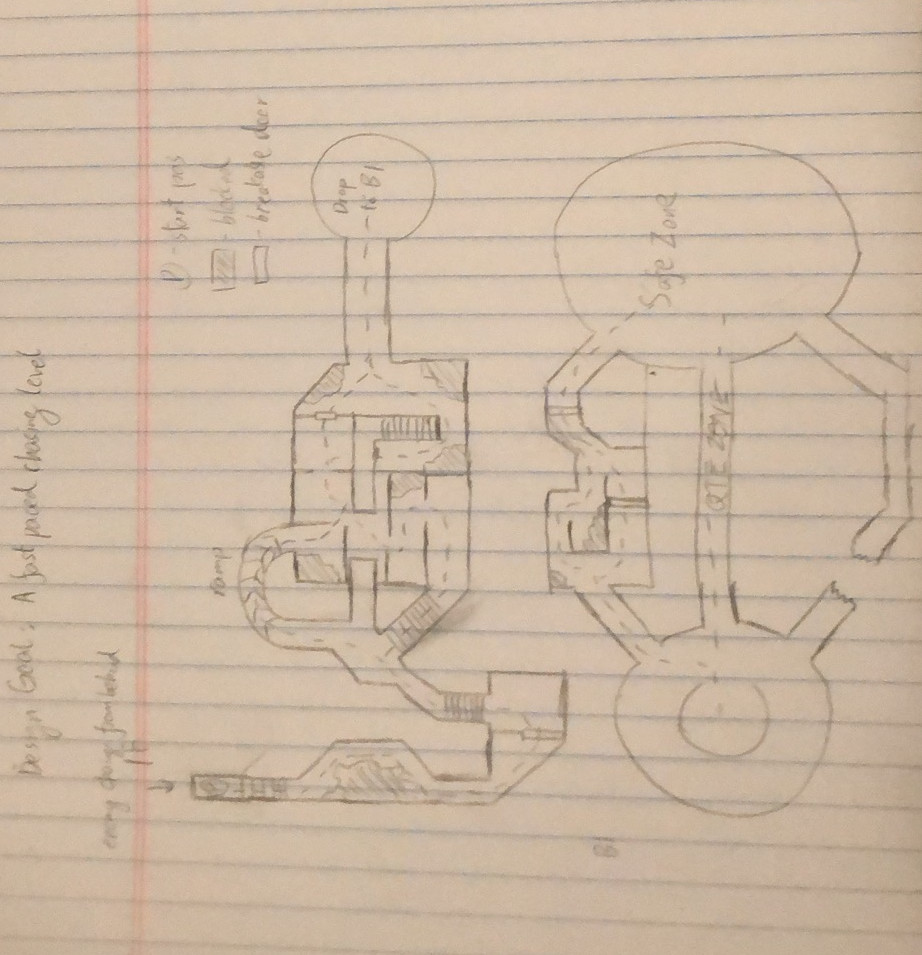
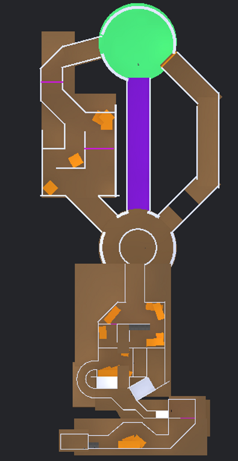
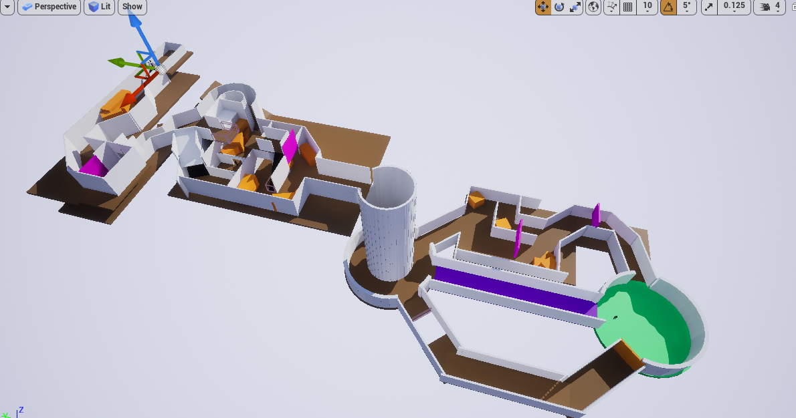

Escaping Level
Escaping Level
In this level, my intention is to design an intense level which players have to constantly run forward due to the monster chasing from behind. I use narrow paths to amplify the tension and make players feel anxious about the upcoming level. In addition, players will encounter several intersections, and they have to decide which way to go shortly. People feel nervous when they are forced to make hasty decisions, and I want to take advantage of this. In the middle part of this level, players will encounter a big fall and gain a little period of breathing time. Then they will have to rush to the end of the level.


